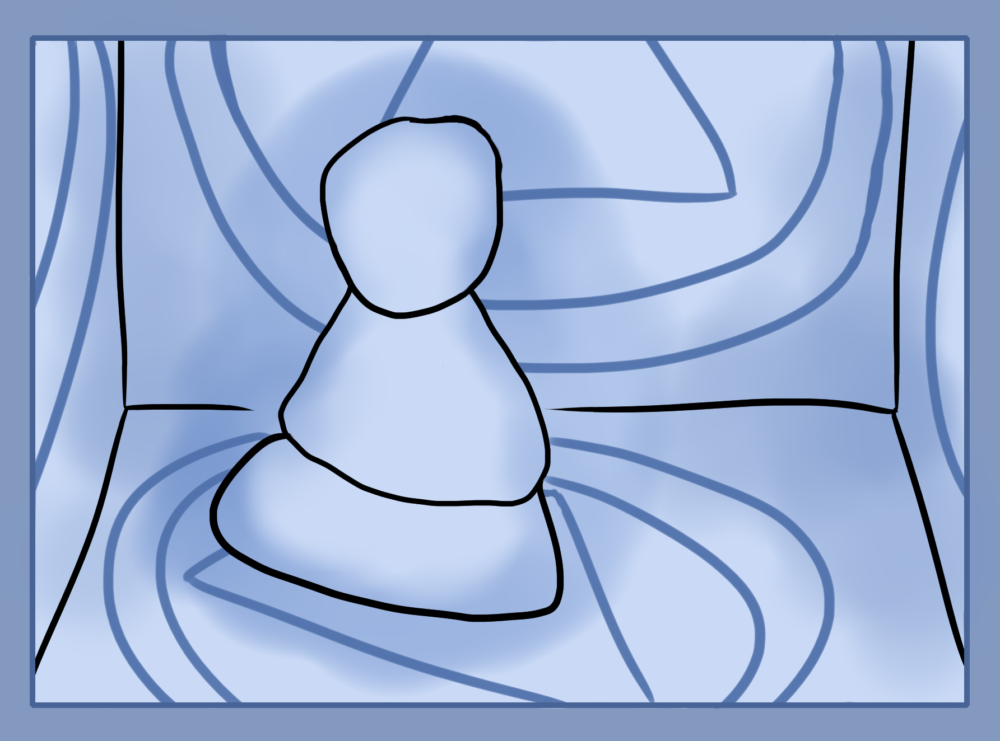

Thus far most of the exercises and theory have been to develop your basic abilities in order to perform magic.
Developing the mind, imagination, ability to feel and project your imaginations spatially outside of you, the aura, different forms of mana, etc. These are the basic building blocks for all of the next exercises.
So now it's time to move up a gear. Make sure to come back to the previous section of exercises anytime you need to improve your abilities or refresh on the basics.
